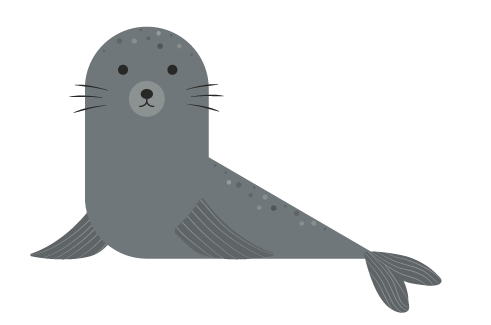

SØLØVE
Vægt: Hannererne vejer 150 - 300 kg og hunnerne vejer 50 - 90 kg.
Højde: Hanner op til 2,2 meter og hunner op til 1,8 meter.
Levealder: 20 - 25 år.
Føde: Blæksprutter og fisk.
Levested: USA's vestkyst.
Sjove facts om søløven
Den californiske søløve kan opnå en hastighed på 40 km/t, hvilket er hurtigere end nogen anden søløveart.
Californiske søløver er kendte for deres intelligens, legesyghed og støjende ”gøen”.
Når søløven svømmer, bruger den forlufferne til at skaffe sig fremdrift og baglufferne til at styre med. Sæler gør det modsat.